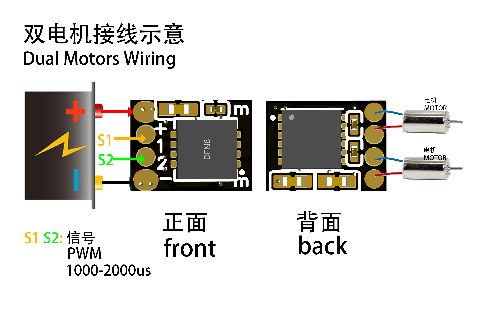
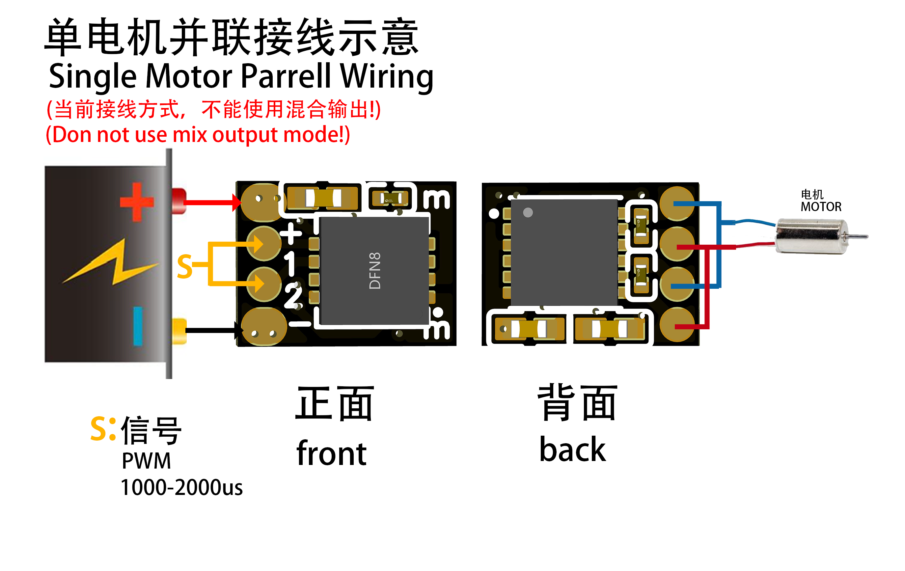
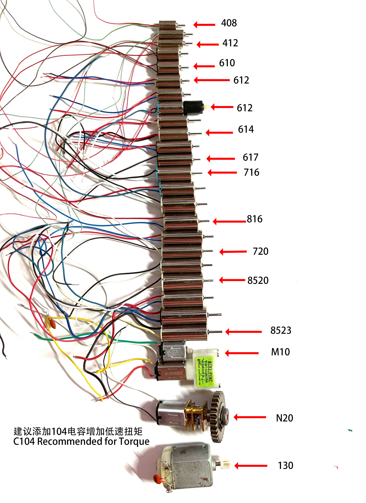

JETFAY JER1
产品规格
基本参数
- 尺寸：4.9mm x 6.3mm x 2.2mm
- 重量：0.07g
- 工作电压：3.3V - 5V
- 输出电流：每路1A持续，最大1.5A. 两路并联时电流x2
- 通道数：双路双向，独立或混合输出
产品特点
- 最小最轻的超微型双路双向电调
- 精准的线性速度控制，实现细腻调速
- 强劲低速扭矩输出，确保平稳起步与逼真攀爬体验，轻松应对重载
- 超静音运行
- 内置智能过热保护
- 多档可调工作频率，适配各类应用场景，完美匹配不同电机特性
- 可调快慢衰减与刹车模式
- 可调双通道混控模式
- 可调单/双向模式
- 中位/零油门自检保护，即启动时必须零油门，才会激活电调功能，以防意外。
- 优质供电电路设计，高品质沉金工艺，性能稳定可靠
- 丰富的参数调节选项，满足多样化需求
接线示意图


应用场景
- 微型小车
- 工程车
- 飞机
- 其它需要精确电机控制的设备
电调启动和调参指南
JETFAY JER1电调的使用和调参指南
JETFAY JER1 电调低速扭矩演示（408空心杯）
已经测过支持的电机

1. 硬件连接和正常启动流程
这个电调是通过驱动电机发出的声音来交互调参数的。
在开始调参前，请确保以下硬件连接正确，请参考上面的接线示意图：
- 电调的信号线已正确连接到接收机的对应通道
- 电机已正确连接到电调的输出端
- 电池已正确连接到电调的电源输入端
- 所有连接需牢固可靠，避免接触不良
这些前置条件对于通过电机声音进行调参至关重要，因为只有在硬件连接正确的情况下，电调才能正常工作并发出提示音。
注意，当并联输出时，输出声音会比较小，需要详细听，或者调参时不要并联。
2. 电调正常启动流程
-
上电启动
- 电调上电后会播放开机音乐（do-re-mi音阶），表示电调正常工作
- 等待1秒进入信号检测状态
-
信号检测
- 电调等待接收机发送油门信号
- 当检测到任一通道的油门信号时，会播放低音的提示音（do）
- 此时如果油门不在零位，电调会发出中位自检报警声,持续一个短的高音(fa) 2秒一次，直到油门回到零位
-
正常运行
- 油门回到零位后，电调会设置当前位置为零油门值：
- 单向模式：最低点为零油门（值为100）
- 双向模式：中点为零油门（值为150）
- 此时电调进入正常运行状态，可以通过推油门来控制电机转速
- 油门回到零位后，电调会设置当前位置为零油门值：
注意：每次改变转向模式（单向/双向）后，都需要重新将油门摇杆移动到对应的零油门位置（单向模式为最低点，双向模式为中点），电调才能正常启动。
3. 进入调参模式
- 上电后，电调会播放开机音乐（do re mi），表示正常工作
- 等待1秒后，电调进入信号检查状态
- 当检测到有效信号时，会发出一个长音（do）
- 进入调参模式的步骤：
- 听到开机音乐(do re mi)之后1秒内， 将任一通道油门推到最大
- 等待全油门提示音（mi mi mi mi 四声一组，循环播放）
- 听到全油门提示音后，将油门拉回零位
- 等待零油门提示音（do do 两声一组，重复4次）
- 两秒内，再次将油门推到最大
- 听到进入编程提示音（do re mi fa，重复3次）后，即进入调参模式
4. 参数设置流程
- 进入调参模式后，电调会按以下顺序循环发出可调参数的对应提示音：
- PWM频率设置（FUNC_FREQ = 1）
- 衰减模式设置（FUNC_DECAY = 2）
- 混控模式设置（FUNC_MIX_CONTROL = 3）
- 电机旋转方向设置（FUNC_DIRECTION = 4）
- 对于每个参数：
- 首先播放当前功能编号对应的提示音（长音do，次数等于功能编号）
- 然后播放当前参数值对应的提示音（短音mi，次数等于参数值编号）
- 接着播放可选的参数值提示音（短音mi，次数等于参数编号）
- 例如：
- 功能1参数1：1声长do，1声短mi
- 功能3参数2：3声长do，2声短mi
- 在播放某个参数值提示音时，如果想选择该值：
- 将油门拉回零位
- 等待保存确认提示音（do re mi fa，重复3次）
- 参数保存完成后自动退出调参模式
- 如果不想选择当前参数值：
- 保持油门在最大位置
- 等待下一个参数值提示音
- 如果不想修改当前参数：
- 等待所有参数值提示音播放完
- 自动进入下一个参数设置
- 快速跳过当前功能设置：
- 将油门拉到半油门位置
- 电调会立即跳过当前功能，进入下一个功能的设置
- 当所有参数循环完成后，会重新从PWM频率设置开始
5. 参数说明
功能1 PWM频率（FUNC_FREQ = 1）
- 参数1（PARAM_FREQ_LOW）：75Hz （默认）
- 参数2（PARAM_FREQ_NORMAL）：150hz
- 参数3（PARAM_FREQ_MEDUIUM）：1000Hz
- 参数4（PARAM_FREQ_HIGH）：47kHz
小的电机可以使用尽量低的工作频率，以达到最佳的低速线性和扭矩表现。
除了 1000hz 工作时不静音，其它频率是工作时静音
功能2 衰减模式（FUNC_DECAY = 2）
- 参数1（PARAM_DECAY_FAST）：快衰减 （默认）
- 参数2（PARAM_DECAY_SLOW）：慢衰减
！慢衰减 模式，收油门后，电机会很快停下，即电机会有类似刹车的功能，此外还可以提高对于速度的控制的准确度，以及低速的可以获得更强的扭矩表现。对于比较大的电机可能需要配合更多的工作频率。
快衰减 收油门后，电机还是惯性的转，兼容性更好。
功能3 混控模式（FUNC_MIX_CONTROL = 3）
- 参数1（PARAM_MIX_DISABLE）：关闭混控 （默认）
- 参数2（PARAM_MIX_ENABLE）：开启混控，（注意，如果是并联输出，一定不要设置这个混控！)
功能4 电机旋转方向（FUNC_DIRECTION = 4）
- 参数1（PARAM_DIR_BIDIRECT）：双向模式 （默认）
- 零油门位置：油门中位
- 半油门位置：约3/4油门位置
- 修改为双向模式后需要将油门回到中位（新的零油门位置）才能启动电调
- 参数2（PARAM_DIR_UNIDIRECT）：单向模式
- 零油门位置：最低油门位置
- 半油门位置：油门中位
- 修改为单向模式后需要将油门回到最低位（新的零油门位置）才能启动电调
6. 提示音说明
- 开机音乐：do re mi
- 有效信号提示音：一个长的do音
- 油门提升音：检测到油门从零位开始提升
- 全油门提示音：mi mi mi mi（四声一组，循环播放）
- 零油门提示音：do do（两声一组，重复4次，间隔后再重复一次，等待1.5秒）
- 进入编程提示音：do re mi fa（重复3次）
- 功能编号提示音：长音do（次数等于功能编号）
- 参数值提示音：短音mi（次数等于参数编号）
- 保存确认提示音：do re mi fa（重复3次）
- 中位自检报警声: 持续一个短的高音(fa) 2秒一次
7. 注意事项
- 在调参过程中，请注意区分长音do（功能编号）和短音mi（参数值）
- 每个功能和参数都有其固定的编号，通过提示音的次数来识别
- 使用半油门可以快速跳过当前功能的设置
- 修改电机方向模式后，需要将油门移动到新的零位才能启动电调
- 如果想退出调参模式，可以直接断电重启
- 所有参数修改后会立即保存，重启后仍然有效
- 如果不小心进入调参模式，重启即可
- 对于双向和单向，零油门和半油门的位置是不同的，双向时，中位是零油门， 半油则3/4的位置附近，单向则是最低位是零油门，而半油是中位。 对于设置转向双向，和双转单时，因零位修改后就变了，所以需要再移到摇杆到新的零油门才能正常启动电调。